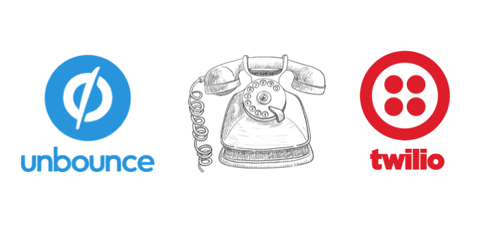
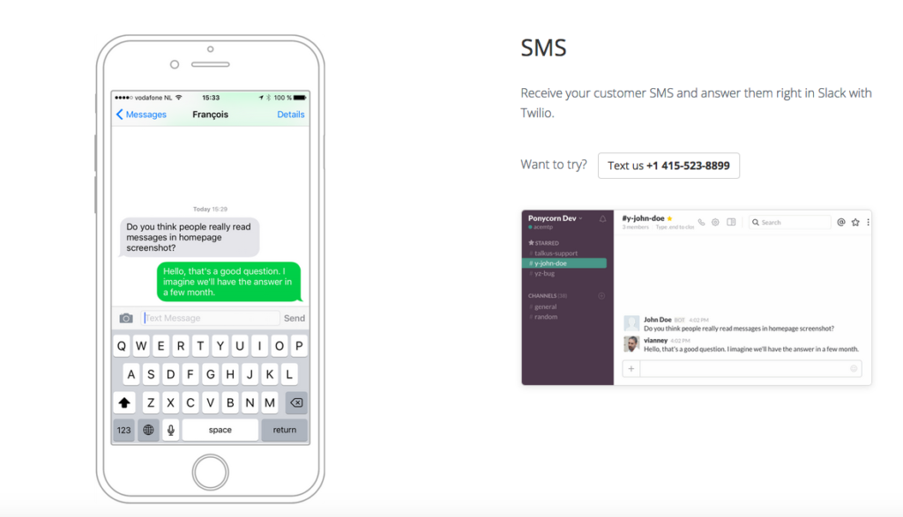

Few hold the keys to the Twilio Console, but many need Console data. As the developer with keys, you balance sharing valuable data with keeping that Console data safe. You can’t give away the keys when a team member needs info on a single message. The alternative of pulling reports manually for each request is also infeasible — especially when you’re fighting bad guys. A long-standing… Read More
Author: Kyle Kelly-Yahner
Build Callbacks With Stamplay, Twilio and Unbounce

Over the holidays I flew from San Francisco to New York with a stop in Denver. United Airlines delayed my flight from Denver to New York two hours. They said it might get cancelled. I called their customer support department, who didn’t help, and waited on hold for a supervisor. With all this time on my hands, I sent them a few tweets. I waited for… Read More
Cheesecake Labs Builds SMS User Verification With Python and Django
Cheesecake Labs, a development shop, built their SMS user verification app in less than a day using Python and Django. Here’s how it works from the user’s end. 1. The user enters his/her phone number in the app 2. The app pings the server, and the user quickly receives an SMS with a confirmation 6-digit pin-code. 3. As soon as the user types the correct pin… Read More
Smart Phone, Smart Number: Listen Gives You Control of Your Phone Number
Thousands of strangers regaled Lauren Leto with tales of their intimate exploits from the previous night. This was back in 2009, when she founded Texts From Last Night (TFLN). The internet ravenously consumed these strangers’ stories. TFLN was wildly successful. In the midst of that viral snowball rolling downhill, Lauren was pricked by a thought. The medium of TFLN’s success, the phone number, was broken. She didn’t… Read More
Giving Fake Spies Real Phone Numbers
The car is real. It’s not yours, but you’re in it. The people walking through the car park are real. Some of them could be actors. The car park is pretty close to where you met the rest of the people who are part of the game. The plot seems familiar, like a story you absorb through osmosis after falling asleep with the news on. A… Read More
In The Wake Of A Disaster, Team Comeback Kids Gets Students The School Supplies They Need
In August of 2016, torrential downpours caused catastrophic flooding across Southern Louisiana. It dropped the equivalent of 7.1 trillion gallons of water, devastating parishes across the state. Louisianaians were salvaging what they could from the disaster, while scrambling to find a way to prepare their kids for the first day of school. Many low income residents did not have the financial means to replace their kids’… Read More
Serving Users > Using Servers: Catch Up On Jeff’s AWS ReInvent Keynote
Meet Jeff, he’s a software guy. Sure, he’s a proud Michigan Wolverine, a former CTO, now a CEO, but he’s a software person first. Following that mindset guided Jeff from Versity all the way to Twilio. If Versity doesn’t ring a bell, Jeff can give you a refresher. It was the first software business he founded. Versity delivered better class notes to college students. Twilio’s mission… Read More
Build Stranger Things Lights with Firebase, Zapier and Twilio
It’s a 2,280 trek from my desk to Indiana, the home state of Stranger Things. I will forgo any attempt to calculate my commute to the Upside Down. Not only do I have no interest in grappling with the Demogorgon, but any respected physicist will tell you it’s hard to pin down the Upside Down’s coordinates. It could be beneath me at this very moment, or… Read More
Talkus Builds An SMS Helpdesk In Slack With Meteor JS and NodeJS

There’s an iconic scene in Portlandia where Fred Armisen spirals downwards, trapped in a technology loop. The chime of a SMS alert takes Fred from his Netflix queue to his phone, which takes him to Facebook, until his email calls his attention. This probably sounds familiar. But, for customer service reps, this likely feels familiar. You bounce from one platform to another, tracking down pieces of… Read More